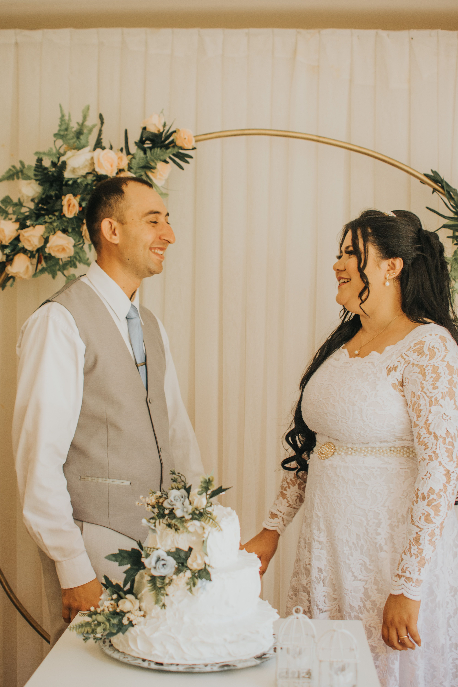

Santi & Agung
Dengan penuh syukur dan kebahagiaan, kami mengundang Anda untuk hadir dan memberikan doa restu di hari istimewa kami

وَمِنْ آيَاتِهِ أَنْ خَلَقَ لَكُم مِّنْ أَنفُسِكُمْ أَزْوَاجًا لِّتَسْكُنُوا إِلَيْهَا
"Dan di antara tanda-tanda kekuasaan-Nya ialah Dia menciptakan untukmu pasangan hidup dari jenismu sendiri, supaya kamu cenderung dan merasa tenteram kepadanya, dan dijadikan-Nya di antaramu rasa kasih dan sayang."
QS. Ar-Rum : 21
Sepasang Insan
Yang Allah pertemukan dengan penuh keindahan


Santi
Santi Aprianti, S.Pd.
Putri pertama dari
Bapak H. Ahmad Fauzi & Ibu Hj. Nur Aini
Seorang pendidik yang penuh kasih, mencintai alam dan hal-hal sederhana yang bermakna. Tumbuh di Samarinda dengan hati yang hangat.

Agung
Agung Pratama, S.T.
Putra pertama dari
Bapak H. Rudi Hartono & Ibu Hj. Sari Dewi
Seorang insinyur yang berdedikasi dan berjiwa petualang. Lahir di Samarinda, meyakini bahwa cinta sejati adalah anugerah terindah.
Kisah Cinta Kami
Sebuah perjalanan yang Allah tuliskan dengan penuh keindahan
2020 · Samarinda
Pertemuan Pertama
Takdir mempertemukan kami di sebuah seminar pendidikan di Samarinda. Momen kecil yang menggelikan — Santi tak sengaja menumpahkan kopi ke buku catatan Agung — ternyata menjadi awal dari persahabatan yang perlahan tumbuh menjadi sesuatu yang jauh lebih dalam dan bermakna.
2024 · Tepi Sungai Mahakam
Lamaran
Di tepi Sungai Mahakam saat senja keemasan, dengan cincin peninggalan keluarga dan diiringi doa kedua orang tua, Agung meminta Santi untuk menjadi pendampingnya seumur hidup. Air mata bahagia mengalir, dan jawaban "iya" itu menjadi janji suci.
2026 · 28 Maret
Menuju Pelaminan
Setelah melewati berbagai ujian dan membangun fondasi cinta yang kokoh, hari yang kami impikan akhirnya tiba. Dengan restu Allah SWT dan kedua orang tua, kami siap melangkah bersama menuju kehidupan baru yang sakinah, mawaddah, dan penuh rahmah.
Hari Pernikahan
Menghitung Hari Bahagia
Hari Bahagia Telah Tiba 🎉
Sabtu, 28 Maret 2026 · Samarinda, Kalimantan Timur
Rangkaian Acara
Dengan penuh kebahagiaan kami mengundang kehadiran Anda
Live Streaming
Saksikan Momen Bahagia Kami
Bagi tamu undangan yang tidak dapat hadir secara langsung, kami menyediakan tayangan live streaming agar Anda tetap bisa menyaksikan dan mendoakan kebahagiaan kami dari mana saja.
Tayang Live Pada
Sabtu, 28 Maret 2026 · 08.00 WITA
Tonton Live StreamingGaleri Foto
Sepenggal momen berharga yang kami abadikan
Video Prewedding
Cuplikan perjalanan cinta kami
Santi & Agung — Prewedding 2025
Wedding Gift
Doa dan kehadiran Anda adalah hadiah terindah bagi kami
Transfer Bank
Bank BCA
1234 5678 90
a/n Santi Aprianti
OVO / GoPay
PLACEHOLDER
Scan to pay
0812 3456 7890
a/n Santi Aprianti
Kirim Langsung
Alamat Pengiriman
Jl. Anggrek Raya No. 47
Kel. Sungai Pinang Dalam
Samarinda Ulu, Samarinda
Kalimantan Timur 75117
RSVP
Konfirmasi kehadiran paling lambat 21 Maret 2026
Terima kasih telah mengonfirmasi kehadiran Anda!
Kami sangat menantikan kehadiran Anda. 🌸
Doa & Ucapan
Ucapan doa dari orang-orang terkasih
Kirimkan Doa dan Ucapanmu 💌
"Merupakan suatu kehormatan dan kebahagiaan yang teramat besar bagi kami apabila Bapak / Ibu / Saudara / i berkenan hadir dan memberikan doa restu dalam acara pernikahan kami.
Atas segala perhatian dan kehadiran Bapak / Ibu / Saudara / i, kami ucapkan terima kasih yang sebesar-besarnya."
Dengan Cinta
Santi & Agung
Sabtu, 28 Maret 2026